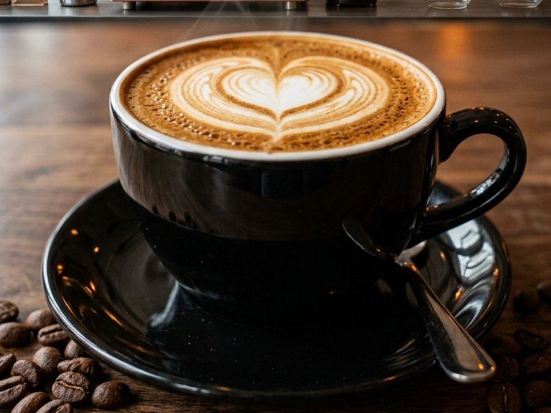
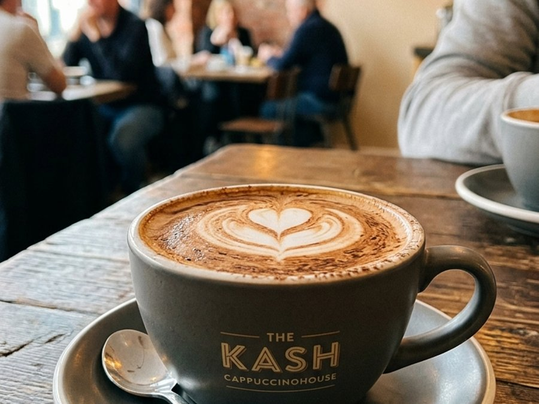
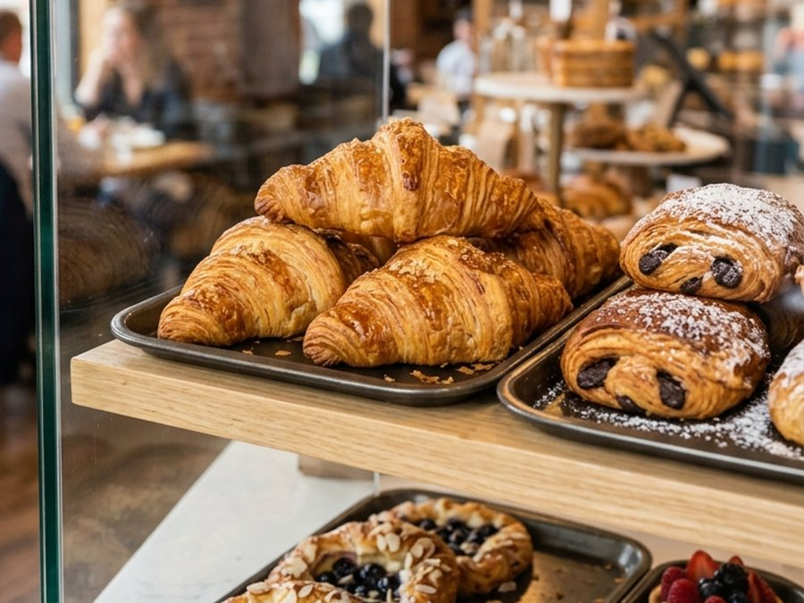
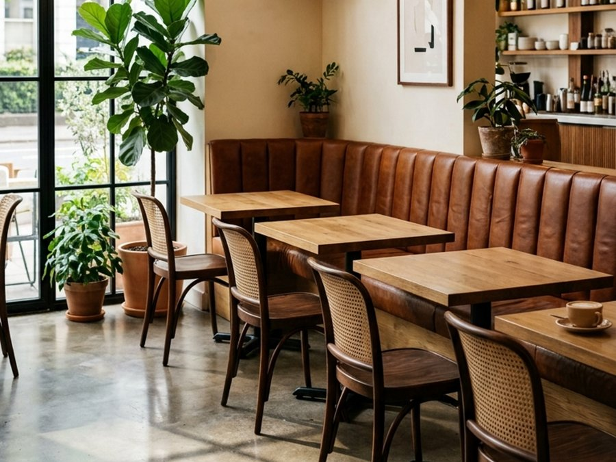
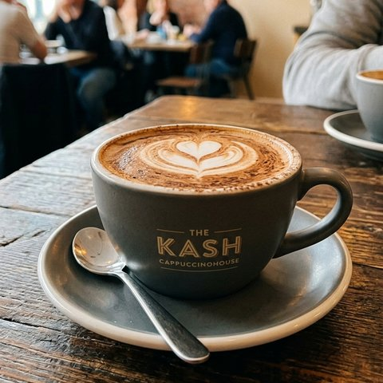

Quality first
Carefully sourced beans, pulled with patience.
A good café is more than coffee. It is a place to pause, talk and feel at home.

Three simple promises behind every cup.

Carefully sourced beans, pulled with patience.

Every guest treated like a regular.

Fresh ingredients, nothing unnecessary.


Inspired by Italian coffee culture, Abdul Rehman opened Caffè di Kash to bring that same warmth home, one cup at a time.
Great coffee tastes better shared.Plan your visit